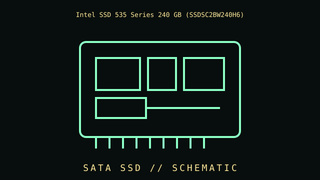

[ EARLY SATA SOLID-STATE DRIVES // IDENTIFIED COMPONENT ]
Intel SSD 535 Series 240 GB (SSDSC2BW240H6)
2.5-inch SATA 6 Gb/s client SSD, 2015. This file identifies a specific part or clearly bounded model family, rather than an overview of the category.

IDENTIFY THE REVISION: Check the complete product code, suffix, board revision, region, firmware, and date code. Similar names do not guarantee the same hardware.
Part specifications
| Catalog subcategory | Early SATA solid-state drives |
|---|---|
| Catalog identity | Intel SSD 535 Series 240 GB (SSDSC2BW240H6) |
| Generation / family | 2.5-inch SATA 6 Gb/s client SSD, 2015 |
| Architecture / ratings | 240 GB capacity; 2.5-inch, 7 mm enclosure; SATA 6 Gb/s; 16 nm MLC NAND for the cited model. |
| Interface / fit | Requires SATA data/power connections and a SATA-capable host; exact firmware and system TRIM support vary. |
| Variants / field identification | Verify the full product suffix and label; Intel 535 M.2 and 2.5-inch variants have different physical connectors. |
| Evidence to collect | Photograph the nameplate and PCB labels; record test system, firmware, installed accessories, condition, and manual/datasheet revision used to verify specifications. |
Compatibility, care & service
- Check electrical signaling, pinout, voltage, current, connector, mounting and supported firmware before installation; do not rely on matching shapes alone.
- Inspect physical condition and manufacturer warnings; mains PSUs, CRTs, batteries and spinning media may retain hazardous energy or require specialist service.
- For vintage equipment, use the correct bus generation, BIOS, driver, media type, cable orientation and resource configuration documented for the machine.
- Record measured results separately from the manufacturer's published limits and state the setup and measurement conditions.
Model-specific notes
Requires SATA data/power connections and a SATA-capable host; exact firmware and system TRIM support vary.
Verify the full product suffix and label; Intel 535 M.2 and 2.5-inch variants have different physical connectors.
Sources & further reading
- Manufacturer / standards reference — Intel SSD 535 Series 240 GB (SSDSC2BW240H6)Source for product-family specifications; compare exact suffix, revision, and region with the unit label.
- Manufacturer / standards reference — Intel SSD 535 Series 240 GB (SSDSC2BW240H6)Source for product-family specifications; compare exact suffix, revision, and region with the unit label.
Links lead to manufacturer or standards references where available. If a source covers a family, use the exact model's manual as the final authority.